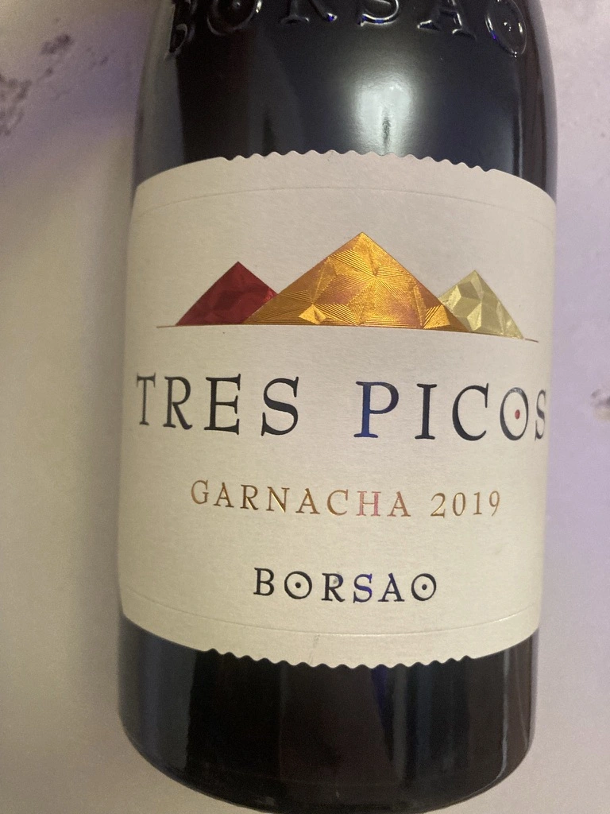

- Type
- Red Still, Dry
- Producer
- Bodegas Borsao
- Vintage
- 2019
- Location
- Spain, Campo de Borja DO
- Grapes
- Grenache
- Alcohol
- 15
- Sugar
- 1.8
- Price
- 585 UAH
- Cellar
- N/A
Fermentation happens in stainless vats. Then it is aged for 5 months in new french oak barrels.
Ratings
2022-01-25 - 7.25
Unfortunately, slightly corked wine. Hence, the rating is lower than it could be. Youthful and intense. Red berries, cinnamon, menthol and oak. Full-bodied, fresh with powerful tannin. Good balance, good volume and friendly wine despite 15 abv.